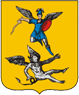
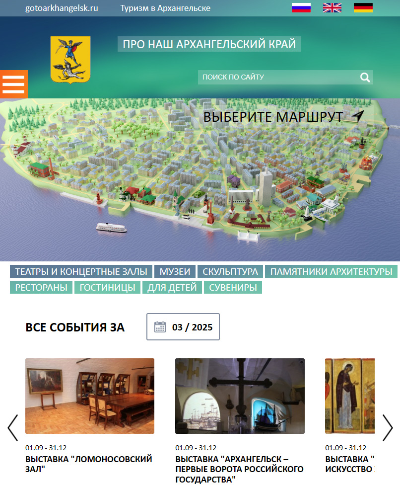
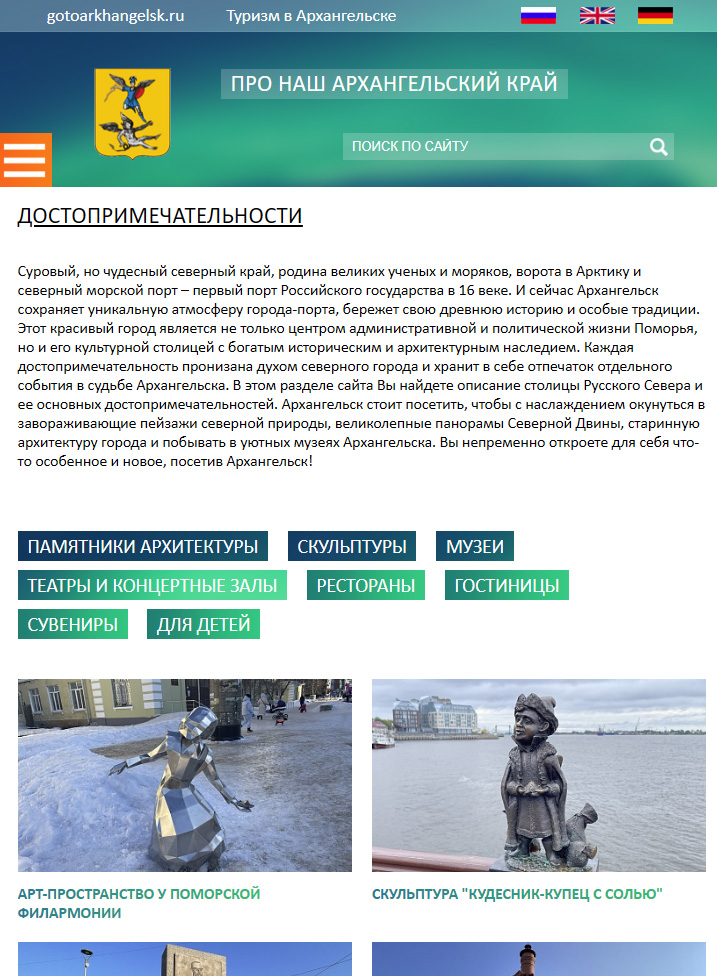
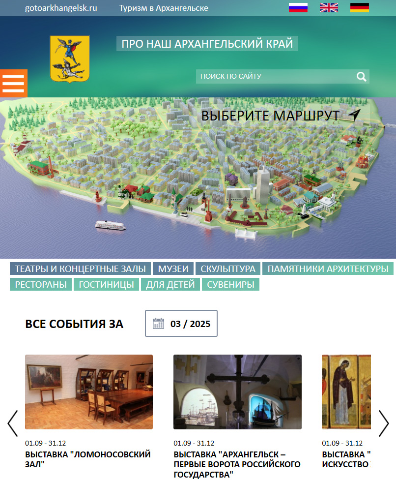
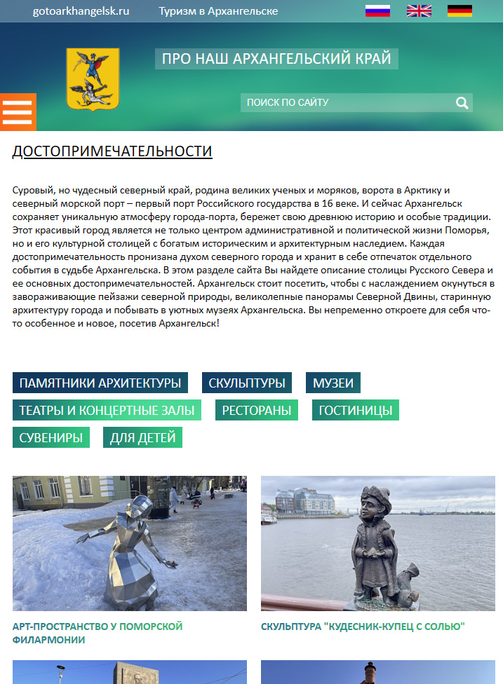

 Сайт www.gotoarkhangelsk.ru
Администрация ГО «Город Архангельск» © 2025. Р.Ф.,Архангельская обл., г. Архангельск.
-> Сайт www.arhcity.ru - Официальный информационный интернет-портал г. Архангельска">
Официальный туристический сайт
Администрации г. Архангельска
🚩
__ " В
А р х а н г е л ь с к [ у Ю ]|
в о к р у г м а р ш " !
_
\ "._<≈ в
начало виртуального путешествия на 360° © ≈
СпутникСхема
Яндекс
Карты
 Помощь,о туре
 Сайт www.gotoarkhangelsk.ru
Администрация ГО «Город Архангельск» © 2025. Р.Ф.,Архангельская обл., г. Архангельск.
-> Сайт www.arhcity.ru - Официальный информационный интернет-портал г. Архангельска">
 Сайт www.gotoarkhangelsk.ru
Администрация ГО «Город Архангельск» © 2025. Р.Ф.,Архангельская обл., г. Архангельск.
-> Сайт www.arhcity.ru - Официальный информационный интернет-портал г. Архангельска">
Помощь,о туре
 Сайт www.gotoarkhangelsk.ru
Администрация ГО «Город Архангельск» © 2025. Р.Ф.,Архангельская обл., г. Архангельск.
-> Сайт www.arhcity.ru - Официальный информационный интернет-портал г. Архангельска">
 Сайт www.gotoarkhangelsk.ru
Администрация ГО «Город Архангельск» © 2025. Р.Ф.,Архангельская обл., г. Архангельск.
-> Сайт www.arhcity.ru - Официальный информационный интернет-портал г. Архангельска">